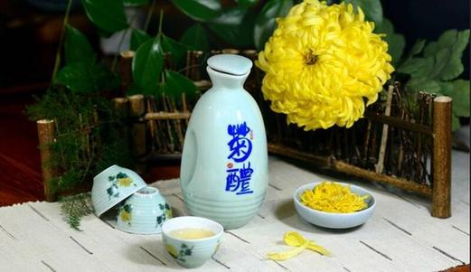
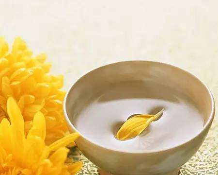

重阳节为什么喝菊花酒 重阳节饮菊花酒的习俗
菊花酒由菊花与糯米、酒曲酿制而成的酒，古称长寿酒，其味清凉甜美，有养肝、明目、健脑、延缓衰老等功效。有枸杞菊花酒，花糕菊花酒，还有白菊花酒。重阳佳节，汉族民间有饮菊花酒的传统习俗。菊花酒，在古代被看作是重阳必饮、祛灾祈福的“吉祥酒”。
据南朝梁关均撰《续齐谐记》记载，“九月九日……，饮菊酒，祸可消”。这是旧俗重九为重阳节，需饮菊花酒的开始。
《续齐谐记》说，东汉桓景随费长房学道多年。有一天，费长房告诉桓景，九月九日这一天，你家中会有大灾难，你快速赶回家里，让全家人各做一个装茱萸的绰袋系在手臂上，登高饮菊花酒，可以消灾避难。桓景依其言，全家人得以免于疫病。这个近乎神话的故事，反映了人们希望避瘟疫，求健康的殷切愿望，同时也说明了菊花酒在古人心中的地位。
菊花酒
从中药理论来说，菊花的性味与归经应属“甘、苦、微寒，归肺、肝经”，其功能与主治为散风清热、平肝明目，治疗风热感冒、目赤肿痛、眼目昏花等。
古人甚至把菊花酒称之为“不老方”。《太清记》中就记述了一种“不老方”谓：“九月九日采菊花与茯苓松脂久服之令人不老。”而在《本草纲目》中则更具体的记载：
“九月九日采白菊花，名曰金精菊二斤，茯苓一斤，捣罗为末，每服二钱，温酒调下，日三服，或以炼过松脂和丸鸡子(鸡蛋)大，每服一丸。主头眩，久服令人好颜色，不老。”